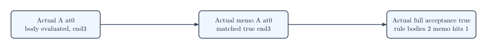
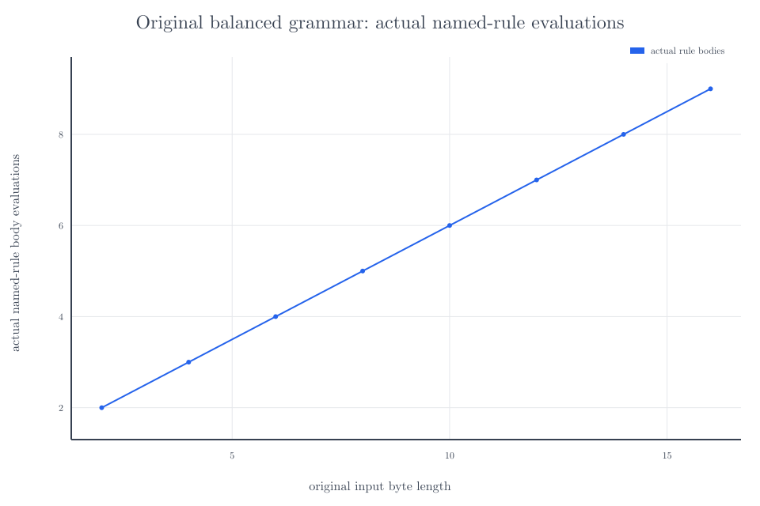
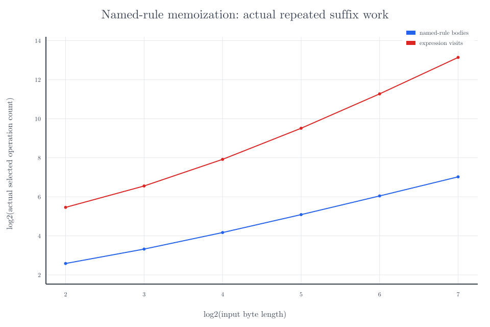
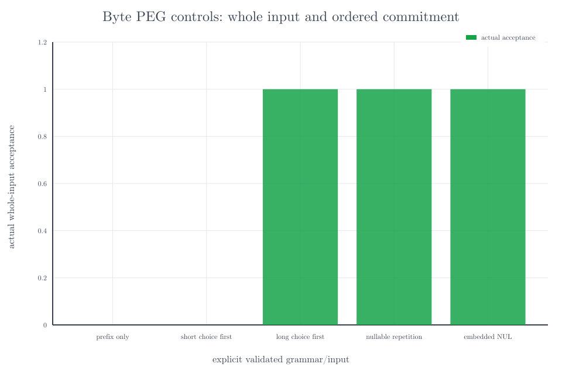

Memoized PEG parsing: actual choices and rule reuse
Abstract
Start with an actual repeated rule/position request, then retain the original balanced-string grammar, negative lookahead and input-length study. Canonical events expose accepted choices and cached successes/failures, while a repeated-suffix control shows why this interpreter does not promise general linear-time packrat performance.
Recognition, ordered choice and whole-input acceptance
A parsing expression grammar recognizes literal bytes, named rules, sequences, first-success ordered choices, greedy repetition, optional children and nonconsuming predicates. A successful choice commits to that child. A later sequence failure does not go back inside that accepted choice to try another child. A positive predicate succeeds at the original position when its child matches; a negative predicate succeeds there when its child fails.
The interpreter memoizes completed named(rule,position) results, including failures. A successful result stores its end position; a failed result has an explicit failure flag rather than a narrowed signed byte index. Matching a prefix alone is insufficient: the public parse result accepts only when the start rule reaches the entire input’s end. Empty literals/sequences are nullable, and repetitions stop when their child makes no progress.
A real memo hit after one alternative fails
Use S←A 'b'/A 'c',A←'a'+ on input aaac. The first alternative evaluates A at position0 and reaches3, then its b fails. The second alternative requests A at the same position and receives the completed cached success before matching c. Exactly two named-rule bodies are evaluated(S andA), with one real memo hit. The diagram and table select actual emitted records, rather than simulating the parser in the report.
#include <dm/dm.hpp>
int main() {
std::filesystem::create_directories("build");
dm::algorithms::PackratParser parser(dm::algorithms::packrat_reuse_rules(),
"S");
auto t = parser.parse_trace("aaac");
dm::graphics::Diagram d;
d.node("first", {0, 0}, "Actual A at0\nbody evaluated, end3");
for (auto &e : t.events)
if (e.kind == dm::algorithms::PackratEventKind::memo_hit)
d.node("cached", {8, 0},
std::format("Actual memo {} at{}\nmatched {} end{}", e.rule,
e.position, e.matched, e.end));
d.node("result", {16, 0},
std::format("Actual full acceptance {}\nrule bodies {} memo hits {}",
t.run.accepted, t.run.rule_evaluations, t.run.memo_hits));
d.edge("first", "cached").edge("cached", "result");
std::print("| actual event | rule | byte position | matched | end | alternative |\n| --- | --- | ---: | " "--- | ---: | ---: |\n");
for (auto &e : t.events) {
std::string name;
if (e.kind == dm::algorithms::PackratEventKind::rule_exit)
name = "rule exit";
else if (e.kind == dm::algorithms::PackratEventKind::memo_hit)
name = "memo hit";
else if (e.kind == dm::algorithms::PackratEventKind::choice_accept)
name = "choice commit";
else
continue;
std::print("| {} | {} | {} | {} | {} | {} |\n", name, e.rule,
e.position, e.matched, e.end, e.alternative);
}
d.save_svg("build/packrat_tiny.svg");
}| actual event | rule | byte position | matched | end | alternative |
|---|---|---|---|---|---|
| rule exit | A | 0 | true | 3 | 0 |
| memo hit | A | 0 | true | 3 | 0 |
| choice commit | S | 0 | true | 4 | 1 |
| rule exit | S | 0 | true | 4 | 0 |

Retain the original balanced-string and negative-predicate examples
The original grammar S←'a'S'b'/'a''b' accepts an bn for n≥1. It rejects empty input and unbalanced strings. The original cases ab,aabb,aaabbb,aab,abb are retained. The second original grammar Start←'a'+ !'c' accepts aaa, rejects aaac and rejects empty input under whole-string recognition.
The original length study runs n=1,...,8. Its named-rule body count grows linearly, but the actual memo-hit count is zero: this particular grammar never requests a completed identical named(rule,position) again. It therefore does not demonstrate that caching itself causes that observed growth rate. Both actual rule and structural expression counters are retained below.
#include <dm/dm.hpp>
int main() {
std::filesystem::create_directories("build");
dm::algorithms::PackratParser balanced(dm::algorithms::packrat_anbn_rules(),
"S"), negative(
dm::algorithms::packrat_negative_lookahead_rules(), "Start");
std::print("| original grammar | original input | actual whole-input acceptance | actual rule bodies | " "actual memo hits |\n| --- | --- | --- | ---: | ---: |\n");
for (const std::string &input : {"ab", "aabb", "aaabbb", "aab", "abb"}) {
bool ok = balanced.parse(input);
std::print("| balanced | `{}` | {} | {} | {} |\n", input, ok,
balanced.rule_calls(), balanced.memo_hits());
}
for (const std::string &input : {"aaa", "aaac", ""}) {
bool ok = negative.parse(input);
std::print("| negative predicate | `{}` | {} | {} | {} |\n",
input.empty() ? "(empty)" : input, ok, negative.rule_calls(),
negative.memo_hits());
}
std::vector<double> x, calls;
std::print("\n| original block length n | input bytes | actual rule bodies | actual expression visits | " "actual memo hits |\n| ---: | ---: | ---: | ---: | ---: |\n");
for (std::size_t n = 1; n <= 8; ++n) {
auto input = dm::algorithms::packrat_balanced_input(n);
balanced.parse(input);
auto r = balanced.last_run();
x.push_back(input.size());
calls.push_back(r.rule_evaluations);
std::print("| {} | {} | {} | {} | {} |\n", n, input.size(),
r.rule_evaluations, r.expression_evaluations, r.memo_hits);
}
auto p = dm::graphics::RPlot::create();
p.lines(x, calls, "actual rule bodies", dm::graphics::RGBA{37, 99, 235, 255}).points(x, calls, dm::graphics::RGBA{37, 99, 235, 255}, 3.);
p.title("Original balanced grammar: actual named-rule evaluations").x_label(
"original input byte length").y_label("actual named-rule body evaluations").save_svg("build/packrat_original.svg");
}| original grammar | original input | actual whole-input acceptance | actual rule bodies | actual memo hits |
|---|---|---|---|---|
| balanced | ab | true | 2 | 0 |
| balanced | aabb | true | 3 | 0 |
| balanced | aaabbb | true | 4 | 0 |
| balanced | aab | false | 3 | 0 |
| balanced | abb | false | 2 | 0 |
| negative predicate | aaa | true | 1 | 0 |
| negative predicate | aaac | false | 1 | 0 |
| negative predicate | (empty) | false | 1 | 0 |
| original block length n | input bytes | actual rule bodies | actual expression visits | actual memo hits |
|---|---|---|---|---|
| 1 | 2 | 2 | 12 | 0 |
| 2 | 4 | 3 | 17 | 0 |
| 3 | 6 | 4 | 22 | 0 |
| 4 | 8 | 5 | 27 | 0 |
| 5 | 10 | 6 | 32 | 0 |
| 6 | 12 | 7 | 37 | 0 |
| 7 | 14 | 8 | 42 | 0 |
| 8 | 16 | 9 | 47 | 0 |

Why this named-rule cache has no general linear guarantee
Ford’s PEG paper describes the recognition model and linear-time parser construction. This implementation memoizes named rules only and uses ordered std::map lookup. It does not memoize every structural expression evaluation. Thus O(R(N+1)) possible named keys, for R rules and N bytes, does not itself bound the work spent computing each key. Map lookup also has logarithmic comparison cost, with rule-name byte comparisons included.
The native control S←(&A 'a')* !'a',A←'a'* accepts a string of a bytes. At every successive position, lookahead invokes A, which greedily scans the entire remaining suffix. These are different named keys, so the total suffix work is quadratic even though the named-rule count is linear. The actual expression visits below expose that distinction. This is a documented limitation of this interpreter, not a claim that efficient general packrat parsing is impossible.
#include <dm/dm.hpp>
int main() {
std::filesystem::create_directories("build");
dm::algorithms::PackratParser parser(dm::algorithms::packrat_quadratic_rules(),
"S");
std::vector<double> x, rules, expressions;
std::print("| input a bytes | actual accepted | actual named-rule bodies | actual expression visits | " "actual memo hits | actual max depth |\n| ---: | --- | ---: | ---: | ---: | ---: |\n");
for (std::size_t n : {4, 8, 16, 32, 64, 128}) {
bool accepted = parser.parse(std::string(n, 'a'));
auto r = parser.last_run();
x.push_back(std::log2(double(n)));
rules.push_back(std::log2(double(r.rule_evaluations)));
expressions.push_back(std::log2(double(r.expression_evaluations)));
std::print("| {} | {} | {} | {} | {} | {} |\n", n, accepted,
r.rule_evaluations, r.expression_evaluations, r.memo_hits,
r.max_depth);
}
auto p = dm::graphics::RPlot::create();
p.lines(x, rules, "named-rule bodies", dm::graphics::RGBA{37, 99, 235, 255}).points(x, rules, dm::graphics::RGBA{37, 99, 235, 255}, 3.).lines(x, expressions, "expression visits", dm::graphics::RGBA{220, 38, 38, 255}).points(x, expressions, dm::graphics::RGBA{220, 38, 38, 255}, 3.);
p.title("Named-rule memoization: actual repeated suffix work").x_label(
"log2(input byte length)").y_label("log2(actual selected operation count)").save_svg("build/packrat_limits.svg");
}| input a bytes | actual accepted | actual named-rule bodies | actual expression visits | actual memo hits | actual max depth |
|---|---|---|---|---|---|
| 4 | true | 6 | 44 | 0 | 9 |
| 8 | true | 10 | 94 | 0 | 9 |
| 16 | true | 18 | 242 | 0 | 9 |
| 32 | true | 34 | 730 | 0 | 9 |
| 64 | true | 66 | 2474 | 0 | 9 |
| 128 | true | 130 | 9034 | 0 | 9 |

Ordered commitment, byte ownership and resource limits
For S←('a'/'ab')'c', input abc is rejected: the choice accepts a, and its enclosing sequence does not reconsider ab after c fails. Reversing the two alternatives accepts abc. A literal ab matches a prefix of abc, but the whole-input result remains false. These controls distinguish actual PEG semantics from unrestricted backtracking or substring search.
Parser construction validates the entire owned grammar, including unreachable references and every node’s arity/text/operator. Parsing copies and owns the complete byte input, supports NUL/high bytes, and clears old memo/counters per attempt. There is no retained pointer to a caller string. Direct or indirect same-key left recursion is rejected when an active named(rule,position) is encountered; this interpreter has no left-recursive seed-growing extension. Nullable repetition stops on no progress.
Default policies cap input bytes1000000, grammar nodes1000000, actual named-rule evaluations1000000, expression visits5000000, combined rule/expression depth512 and trace units1000000. Zero disables each optional policy, without making the native stack unbounded. Legacy long count accessors are separately guarded against overflow. An exception clears incomplete memo, leaves completed=false and explicit partial last-attempt counters, and returns no partial trace; a later call starts fresh.
Trace quota counts input bytesN+three decision fields and each actual event/final memo record as1+its rule-name bytes. Grammar, working cache/capacities and fixed counter fields are excluded. Admission precedes retained input/event/memo copies. Copies own grammar/input/cache, and concurrent mutation of a single parser needs caller synchronization. Time/storage depend on actual expressions, keys and history rather than an unqualified linear bound.
#include <dm/dm.hpp>
int main() {
std::filesystem::create_directories("build");
using namespace dm::algorithms;
std::vector<std::string> labels{"prefix only", "short choice first",
"long choice first", "nullable repetition",
"embedded NUL"};
std::vector<PackratRun> runs;
auto check = [&](PackratParser parser, const std::string & input) {
parser.parse(input);
runs.push_back(parser.last_run());
};
check(PackratParser({{"S", peg_lit("ab")}}, "S"), "abc");
check(PackratParser({{"S",
peg_seq({peg_choice({peg_lit("a"), peg_lit("ab")}),
peg_lit("c")})}}, "S"), "abc");
check(PackratParser({{"S",
peg_seq({peg_choice({peg_lit("ab"), peg_lit("a")}),
peg_lit("c")})}}, "S"), "abc");
check(PackratParser({{"S", peg_star(peg_lit(""))}}, "S"), "");
std::string bytes("a\0b", 3);
check(PackratParser({{"S", peg_lit(bytes)}}, "S"), bytes);
std::vector<double> accepted;
std::print("| explicit grammar/input control | actual prefix match | actual end byte | actual " "whole-input acceptance | actual expression visits |\n| --- | --- | ---: | --- | ---: |\n");
for (std::size_t i = 0; i < runs.size(); ++i) {
auto &r = runs[i];
accepted.push_back(r.accepted);
std::print("| {} | {} | {} | {} | {} |\n", labels[i], r.matched_prefix,
r.end, r.accepted, r.expression_evaluations);
}
auto p =
dm::graphics::RPlot::barplot(accepted, labels, "actual acceptance");
p.title("Byte PEG controls: whole input and ordered commitment").x_label(
"explicit validated grammar/input").y_label("actual whole-input acceptance").y_limits(0, 1.2).save_svg("build/packrat_controls.svg");
}| explicit grammar/input control | actual prefix match | actual end byte | actual whole-input acceptance | actual expression visits |
|---|---|---|---|---|
| prefix only | true | 2 | false | 1 |
| short choice first | false | 0 | false | 4 |
| long choice first | true | 3 | true | 4 |
| nullable repetition | true | 0 | true | 2 |
| embedded NUL | true | 3 | true | 1 |

Verification
This ten-report batch passes 50 CTest cases, 25 directly instrumented ASan/UBSan
cases, 174 compiled and executed public examples, 707/707 scoped documentation
definitions and ten representative clangd hovers. Independent Python checks
verify 5662 records with 27916 checks: optimal prefix-code costs, train-only
Titanic category counts and held-out confusion, and all 5001 actual original
Lorenz RK4 steps. Frozen valid-input comparisons cover all ten producers, with
intentional guard, ownership, arithmetic and endpoint corrections stated
separately. Twelve checkout headers and twelve byte-identical installed
development headers compile independently; an installed-header native consumer
links and runs. All 40 complete programs execute, and 40 native figures have
been visually reviewed. HTML/Markdown exports preserve computed results and
image bytes. These are scoped native checks. Receipts:
build/mepml-conversion/batch-264-273/.